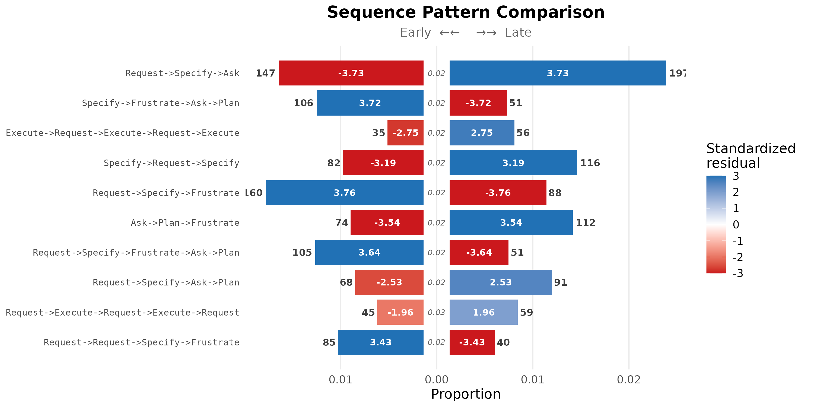
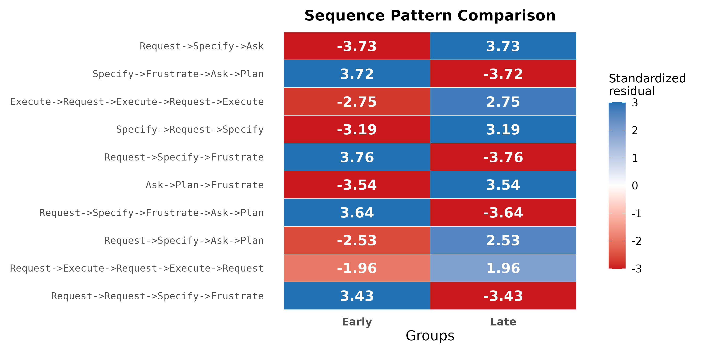
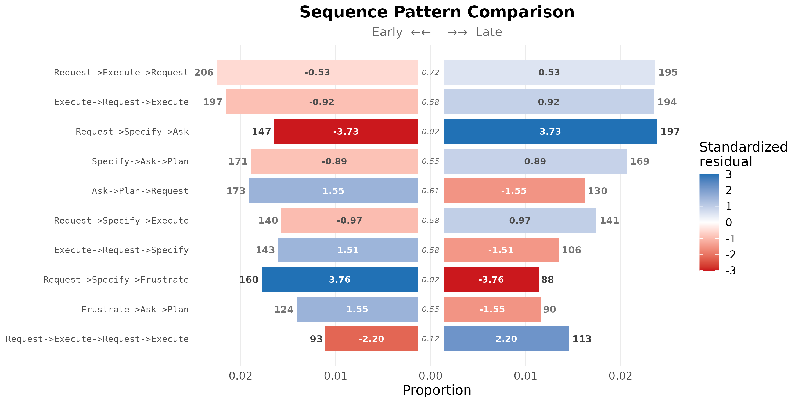

Sequence pattern comparison: early vs late Human-AI interactions
Source:vignettes/sequence-comparison.Rmd
sequence-comparison.RmdA transition network represents the joint distribution of single-step
state transitions, marginalising over higher-order structure. When the
analytic question concerns recurring multi-step patterns — fixed-length
subsequences (k-grams) such as
Command -> Specify -> Execute — single-step summaries
are insufficient: they decompose the pattern into independent steps and
lose its identity as a unit.
sequence_compare_htna() operates at the k-gram level.
For two or more cohorts of sessions, the function enumerates every
k-gram of length within a specified range
(e.g. Request -> Specify -> Execute), computes the
per-cohort frequency, and tests whether the pattern’s rate differs
across cohorts under either a chi-square or a permutation null model.
Standardised residuals identify which cohort each pattern
characterises.
The example below applies the procedure to a between-session split:
sessions are ranked chronologically by their first
session_date (ties broken on session_id), the
first half of sessions are labelled "Early", and the rest
"Late". The analytic question is which patterns
characterise the early phase of the corpus’s lifetime and which
characterise the late phase.
Data preparation
The bundled human_ai corpus already carries an
actor_type column distinguishing Human and AI events (see
?human_ai). A session-level phase column is
added, marking each session as "Early" or
"Late" based on its rank in chronological order.
library(htna)
data(human_ai)
# Chronological session order; session_id is a deterministic
# tiebreak among sessions that started on the same date.
sess_start <- aggregate(session_date ~ session_id, data = human_ai,
FUN = min)
sess_start <- sess_start[order(sess_start$session_date,
sess_start$session_id), ]
half <- nrow(sess_start) %/% 2L
early_sess <- sess_start$session_id[seq_len(half)]
human_ai$phase <- ifelse(human_ai$session_id %in% early_sess,
"Early", "Late")
human_ai$phase <- factor(human_ai$phase, levels = c("Early", "Late"))
table(human_ai$phase)
#>
#> Early Late
#> 10170 9177Constructing the grouped htna network
build_htna() accepts both actor_type (the
within-session actor partition) and group (the
between-session cohort grouping) simultaneously. The result is an object
of class htna_group: a named list of htna networks, one per
cohort, each carrying the actor partition. Cohort labels are read by
sequence_compare_htna() from the list names; no separate
group argument is required at the comparison step.
net_g <- build_htna(
human_ai,
actor_type = "actor_type",
group = "phase"
)
class(net_g)
#> [1] "htna_group" "netobject_group" "list"
names(net_g)
#> [1] "Late" "Early"Pattern comparison
sequence_compare_htna() is invoked on the grouped
network. Pattern lengths 3 to 5 are scanned; only patterns occurring at
least 25 times across the corpus are retained. The permutation test is
used because each session belongs to exactly one cohort, so the
exchangeability assumption that underlies the permutation null is
satisfied. False-discovery-rate correction (adjust = "fdr")
controls for multiple testing across the candidate patterns.
res <- sequence_compare_htna(
net_g,
sub = 3:5,
min_freq = 25L,
test = "permutation",
adjust = "fdr"
)
res
#> Sequence Comparison [106 patterns | 2 groups: Early, Late]
#> Lengths: 3, 4, 5 | min_freq: 25 | permutation: 1000 iter (fdr)
#>
#> pattern length freq_Early freq_Late
#> Request->Specify->Ask 3 147 197
#> Execute->Request->Execute->Request->Execute 5 35 56
#> Specify->Request->Specify 3 82 116
#> Ask->Plan->Frustrate 3 74 112
#> Request->Specify->Frustrate->Ask->Plan 5 105 51
#> Request->Specify->Ask->Plan 4 68 91
#> Request->Request->Specify->Frustrate 4 85 40
#> Specify->Frustrate->Ask->Plan 4 106 51
#> Request->Specify->Frustrate 3 160 88
#> Plan->Request->Execute 3 114 61
#> prop_Early prop_Late resid_Early resid_Late effect_size p_value
#> 0.015089304 0.022519433 -3.733134 3.733134 5.422831 0.01512773
#> 0.003756574 0.006729960 -2.751564 2.751564 4.707396 0.01512773
#> 0.008417163 0.013260174 -3.194473 3.194473 4.650011 0.01512773
#> 0.007595976 0.012802926 -3.542427 3.542427 4.499102 0.01512773
#> 0.011269722 0.006129071 3.640078 -3.640078 4.425205 0.01512773
#> 0.007136111 0.010663229 -2.533619 2.533619 4.321670 0.01512773
#> 0.008920139 0.004687134 3.426113 -3.426113 3.832168 0.01512773
#> 0.011123937 0.005976096 3.721097 -3.721097 4.809739 0.01925347
#> 0.016423732 0.010059442 3.756080 -3.756080 4.582489 0.01925347
#> 0.011701909 0.006973022 3.315762 -3.315762 3.801624 0.01925347
#> ... and 96 more patternsThe discriminative patterns appear at the top of the patterns table, ranked by test statistic.
head(res$patterns, 10)
#> pattern length freq_Early freq_Late
#> 1 Request->Specify->Ask 3 147 197
#> 2 Execute->Request->Execute->Request->Execute 5 35 56
#> 3 Specify->Request->Specify 3 82 116
#> 4 Ask->Plan->Frustrate 3 74 112
#> 5 Request->Specify->Frustrate->Ask->Plan 5 105 51
#> 6 Request->Specify->Ask->Plan 4 68 91
#> 7 Request->Request->Specify->Frustrate 4 85 40
#> 8 Specify->Frustrate->Ask->Plan 4 106 51
#> 9 Request->Specify->Frustrate 3 160 88
#> 10 Plan->Request->Execute 3 114 61
#> prop_Early prop_Late resid_Early resid_Late effect_size p_value
#> 1 0.015089304 0.022519433 -3.733134 3.733134 5.422831 0.01512773
#> 2 0.003756574 0.006729960 -2.751564 2.751564 4.707396 0.01512773
#> 3 0.008417163 0.013260174 -3.194473 3.194473 4.650011 0.01512773
#> 4 0.007595976 0.012802926 -3.542427 3.542427 4.499102 0.01512773
#> 5 0.011269722 0.006129071 3.640078 -3.640078 4.425205 0.01512773
#> 6 0.007136111 0.010663229 -2.533619 2.533619 4.321670 0.01512773
#> 7 0.008920139 0.004687134 3.426113 -3.426113 3.832168 0.01512773
#> 8 0.011123937 0.005976096 3.721097 -3.721097 4.809739 0.01925347
#> 9 0.016423732 0.010059442 3.756080 -3.756080 4.582489 0.01925347
#> 10 0.011701909 0.006973022 3.315762 -3.315762 3.801624 0.01925347Interpreting the standardised residuals
For each pattern, the standardised residual is computed from a 2×2 contingency table of (this pattern present vs. all other patterns) crossed with cohort:
A positive residual on the Early cohort indicates that
the pattern is over-represented in sessions from the first half of the
corpus’s lifetime; a positive residual on the Late cohort
indicates over-representation in sessions from the second half. By the
standardised-residual interpretation,
corresponds to
at the cell level, and
provides strong evidence of over- or under-representation.
Pyramid display
The pyramid display arranges the top patterns as back-to-back horizontal bars, with each cohort on one side. Bar length encodes the per-cohort frequency; the in-bar label gives the standardised residual. The colour scale is shared across both sides so that residuals are directly comparable.
plot(res, style = "pyramid", show_residuals = TRUE)
The pyramid display requires exactly two cohorts and is the most direct visual comparison when this condition is met.
Heatmap display
The heatmap display generalises to any number of cohorts. Each column is a cohort; each row is a pattern; cell colour encodes the standardised residual under the same scale as the pyramid display.
plot(res, style = "heatmap")
Sorting by frequency
By default, patterns are ranked by the test statistic — the most discriminative patterns appear first. Ranking by total occurrence count is alternative when the analytic interest is on the most common patterns regardless of their cohort difference.
plot(res, style = "pyramid", sort = "frequency", show_residuals = TRUE)
Choice of test statistic
The two test choices supported by
sequence_compare_htna() correspond to different assumptions
about the source of the sessions in each cohort.
-
Permutation (
test = "permutation") shuffles cohort labels at the session level and assumes exchangeability across sessions. It is appropriate when the cohorts comprise independent groups of sessions — for example, sessions from different time periods, projects, or experimental conditions — as in the chronological split used here. -
Chi-square (
test = "chisq") tests whether the observed per-pattern, per-cohort counts depart from the expected counts under independence between pattern and cohort. The test makes no assumption of independence between cohorts and is therefore appropriate when the same units contribute to multiple cohorts — for example, a within-session early/late split where each session contributes events to both halves.
Selection of the test should follow from the design that produced the cohort labels.